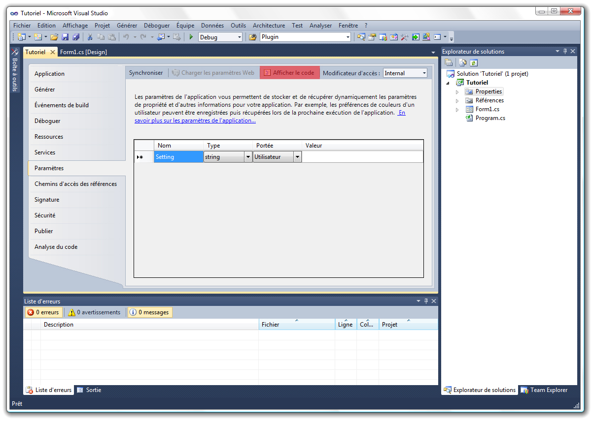

Vous avez besoin de stocker des données sans utiliser les bases de données (SQL et LINQ) ? Vous êtes débutant et vous connaissez les bases du langage C# ?
Les paramètres d'application sont des données comprises dans des fichiers de configuration qui sont écrits en XML.
Si vous ne savez pas ce qu'est le XML, voici un exemple de code :
<?xml version="1.0" encoding="utf-8" ?>
<configuration>
<configSections>
<sectionGroup name="userSettings" type="System.Configuration.UserSettingsGroup, System, Version=4.0.0.0, Culture=neutral, PublicKeyToken=b77a5c561934e089" >
<section name="Tutoriel.Properties.Settings" type="System.Configuration.ClientSettingsSection, System, Version=4.0.0.0, Culture=neutral, PublicKeyToken=b77a5c561934e089" allowExeDefinition="MachineToLocalUser" requirePermission="false" />
</sectionGroup>
</configSections>
<userSettings>
<Tutoriel.Properties.Settings>
<setting name="Setting" serializeAs="String">
<value>Ceci est un exemple d'utilisation de notre fichier XML pour une application C# !</value>
</setting>
</Tutoriel.Properties.Settings>
</userSettings>
</configuration>
Pour de plus amples informations sur XML, vous pouvez lire le tutoriel de Tangui qui l'explique en détail.
Vous verrez plus tard, dans la troisième partie, comment utiliser ces fichiers par l'intermédiaire de C#. Je tiens à préciser que le .NET Framework permet d'accéder à ces fichiers très simplement à l'aide d'une seule méthode !
Le XML est utilisé de deux façons différentes :
avec l'aide de XPath ;
avec l'outil de Visual C#.
L'outil livré avec Visual C# est celui que nous utiliserons dans ce cours.
J'utiliserai Microsoft Visual Studio 2010 avec le .NET Framework 4.0 dans ce tutoriel. N'ayez crainte, que vous ayez une version express de Visual Studio 2010 ou 2008, ça ne changera rien. ;)
Bon alors, commençons !
Création du projet !
Lancez Microsoft Visual C# (pas trop loin ^^ ).
Créez un nouveau projet : Fichier → Nouveau projet → Application Windows Forms / Application WPF. Après, à vous de choisir si vous voulez créer un projet WinForms ou WPF. Ça ne changera rien.
Nommez votre projet : « Vive H@des », par exemple.
Maintenant, reste à créer le fichier *.config.
Le fichier *.config
Nous allons entamer la création et la construction du fichier *.config.
Pour cela, il vous faudra double-cliquer sur Properties ou Propriétés dans l'explorateur de solutions : vous devriez voir apparaître les options de l'application, mais pas encore les paramètres de configuration.
Afin de voir ces paramètres, double-cliquez sur... Paramètres. ^^ Vous voyez donc apparaître ceci :

Le nom correspond au nom du paramètre que vous utiliserez dans votre partie code source. Bien évidemment, n'utilisez pas d'espaces ni de caractères spéciaux.
Le type sert à préciser de quel type sera la variable. Il existe aussi d'autres types, comme la taille.
La portée. Deux choix sont possibles. Je vous en parlerai après.
Et la valeur, qui sert, comme vous l'avez sûrement compris, à stocker la valeur que contiendra la variable. Vous pouvez très bien ne rien mettre, ce qui sera équivalent à un null.
Comme je l'ai dit, pour la portée du paramètre, il y a un choix à faire parmi :
Application. Cette portée est utilisable seulement en lecture seule. Vous ne pourrez la modifier que par Visual Studio ou par exemple le célèbre Bloc-notes de Windows, mais surtout pas par l'application ; ;)
Utilisateur. Contrairement à la portée Application, celle-ci est utilisable et modifiable à n'importe quel moment.
Vous l'avez sans doute remarqué, mais quand vous créez votre premier paramètre, un fichier *.config est créé dans votre solution. C'est lui qui contient toutes les données. Visual C# ne fait que le générer et l'interpréter !
Mais il y a quelque chose de surligné en rouge sur l'image ! Qu'est-ce que c'est ?
Le T.P. de ce tutoriel est un navigateur web qui devra, au démarrage, lire ce paramètre qui est une URL et afficher la page web. Il y aura aussi un bouton afin de donner l'URL de la page web actuelle à notre paramètre.
1 → Nous allons mettre Utilisateur car notre programme va consister, comme je l'ai dit, à ouvrir une page web et en définir une. Donc on a besoin de modifier cette valeur : → public. Une fois que tout ceci sera bon et que vous aurez validé, vous retournerez sur votre formulaire Forms1.cs [Desgin] ou Window1.xaml.
Maintenant, double-cliquez sur « App.config » ; vous devriez avoir ce code :
Nous n'allons pas étudier ces lignes de code en XML. Si vous avez lu le lien que je vous avais donné au début du tutoriel, vous comprendrez. ;)
Revenons à l'image de tout à l'heure ! Vous êtes peut-être impatient de savoir quelle est cette chose soulignée ! o_O
Eh oui ! Visual Studio permet de gérer des événements du fichier *.config. C'est un outil puissant que nous avons là !
Quand vous cliquez dessus, Visual Studio vous ouvre un fichier source.
namespace ParametreApplication.Properties {
// Cette classe vous permet de gérer des événements spécifiques dans la classe de paramètres :
// l'événement SettingChanging est déclenché avant la modification d'une valeur de paramètre ;
// l'événement PropertyChanged est déclenché après la modification d'une valeur de paramètre ;
// l'événement SettingsLoaded est déclenché après le chargement des valeurs de paramètre ;
// l'événement SettingsSaving est déclenché avant l'enregistrement des valeurs de paramètre.
internal sealed partial class Settings {
public Settings() {
// // Pour ajouter des gestionnaires d'événements afin d'enregistrer et de modifier les paramètres, supprimez les marques de commentaire des lignes ci-dessous :
//
// this.SettingChanging += this.SettingChangingEventHandler;
//
// this.SettingsSaving += this.SettingsSavingEventHandler;
//
}
private void SettingChangingEventHandler(object sender, System.Configuration.SettingChangingEventArgs e) {
// Ajouter du code pour gérer l'événement SettingChangingEvent ici.
}
private void SettingsSavingEventHandler(object sender, System.ComponentModel.CancelEventArgs e) {
// Ajouter du code pour gérer l'événement SettingsSaving ici.
}
}
}
Tout est expliqué dans ce code source par l'intermédiaire des commentaires. Vous n'aurez pas besoin de moi. ;)
Personnalisons notre formulaire !
Maintenant, nous allons nous occuper de l'apparence du formulaire. Glissez un WebBrowser dans votre formulaire (je suppose que vous savez faire ça).
En WPF
Mettez le VerticalAlignment à Stretch ainsi que l'HorizontalAlignment.
En WinForm
Mettez-le tout simplement en Dock.Fill. Puis mettez un Button n'importe où dans votre formulaire qui contient le texte suivant : « Définir cette page comme page de démarrage. »
Je vais enfin vous donner la syntaxe pour les paramètres d'application. Il n'y en a que deux ; ce sont des propriétés, générées automatiquement par Visual Studio, ce qui veut dire que ces paramètres sont utilisés de la même manière que des Propriétésget{} set{} .
Non, vous ne rêvez pas ! Je vous avais prévenu que c'était d'une simplicité ! C'est votre jour de chance !
Je vais commencer par mettre la syntaxe permettant de lire une de ces propriétés. Et puis comme vous savez aussi en définir une, je vous laisserai deviner la syntaxe pour le faire.
C'est bon ! Vous maîtrisez les fichiers de configuration ! Maintenant, place à la pratique !
Dans notre programme
Je vais vous demander de gérer l'événement : _Load pour votre fenêtre et l'événement : _Click pour votre bouton. Donc dans : _Load, je vais vous demander de charger une URL de type string dans votre composant : webBrowser1, sachant que pour charger une URL à partir de ce composant, la syntaxe est la suivante :
Et dans l'événement _Click de notre bouton, je voudrais que la page actuelle sur le composant webBrowser1 soit définie dans le paramètre PageDeDemarrage. Pour obtenir l'URL de la page actuelle, vous devez utiliser la propriété Url du composant WebBrowser :
webBrowser1.Url();
Je veux aussi que vous sauvegardiez le paramètre pour une prochaine session !
Bon ! J'en ai trop dit ! Bonne chance !
Je vous laisse 5 minutes !
3... 2... 1... :pirate: GO !!!
Voici la correction :
using System;
using System.Collections.Generic;
using System.ComponentModel;
using System.Data;
using System.Drawing;
using System.Linq;
using System.Text;
using System.Windows.Forms;
namespace ParametreApplication
{
public partial class Form1 : Form
{
public Form1()
{
InitializeComponent();
}
private void Form1_Load()
{
webBrowser1.Navigate(Properties.Settings.Default.PageDeDemarrage);
}
private void button1_Click(object sender, EventArgs e)
{
Properties.Settings.Default.PageDeDemarrage = webBrowser1.Url.ToString();
}
private void Form1_FormClosing(object sender, FormClosingEventArgs e)
{
Properties.Settings.Default.Save();
}
}
}
Maintenant, nous pouvons exécuter notre programme et vous voyez le navigateur charger la page définie dans le fichier *.config, et quand on clique sur le bouton, il donne l'URL de la page actuelle à notre Type dans le fichier *.config pour qu'il puisse charger la page lors d'une prochaine session.
Ceci marque la fin du tutoriel !
Comme vous le voyez, ce système d'utilisation pour stocker vos données est très simple et est aujourd'hui utilisé dans la plupart des programmes.
Je tenais à remercier Thunderseb, Orwell et Coyote pour m'avoir aidé à rendre ce tutoriel publiable. Et aussi aux zCorrecteurs zoubab et Fihld pour avoir corriger mon tutoriel très rapidement. ;)